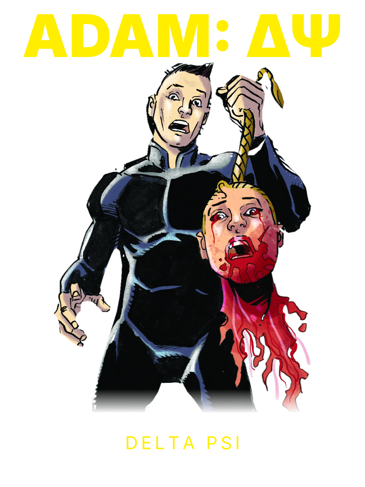

Creation
A synthetic life designed around impossible potential.
A creator-owned science-fiction superhero tragedy

The first synthetic Enhanced human being was created to become the future of human power. But nobody considered what it would take for a weapon to learn how to be human.
Issue One is currently being developed as the opening chapter of a seven-book saga.
The Project
ADAM: ∆Ψ follows Adam, the first synthetic Enhanced human being, created by a United States research directorate as proof that extraordinary power can be engineered.
Adam is built around an idea far stranger than conventional superhuman enhancement: that consciousness itself can influence physical reality. Drawing on the von Neumann–Wigner interpretation of quantum mechanics, the Directorate measures this potential through something it calls observer density; the greater the density, the greater the effect a conscious mind can exert on the world around it. Adam possesses the highest observer density ever recorded.
Adam is not simply a weapon, a superhero, or a scientific achievement. He is a new consciousness learning about identity, morality, grief, responsibility, and what it means to be human while slowly discovering the terrifying scale of what he can become.
The series is structured as a seven-book journey through grief, beginning with SHOCK.
Book One
The moment the world changes.
Adam awakens inside a world that already has expectations for what he should be. Scientists see a breakthrough. Military leaders see a strategic asset. The public may eventually see something else entirely.
Before he can decide who he is, Adam must survive the people who believe they already know.
A synthetic life designed around impossible potential.
The highest observer density ever recorded, contained within a newly created mind.
Every new ability changes the balance between Adam and humanity.
“Can Adam learn how to be human before he learns to be something more?”
The first signal has been received.